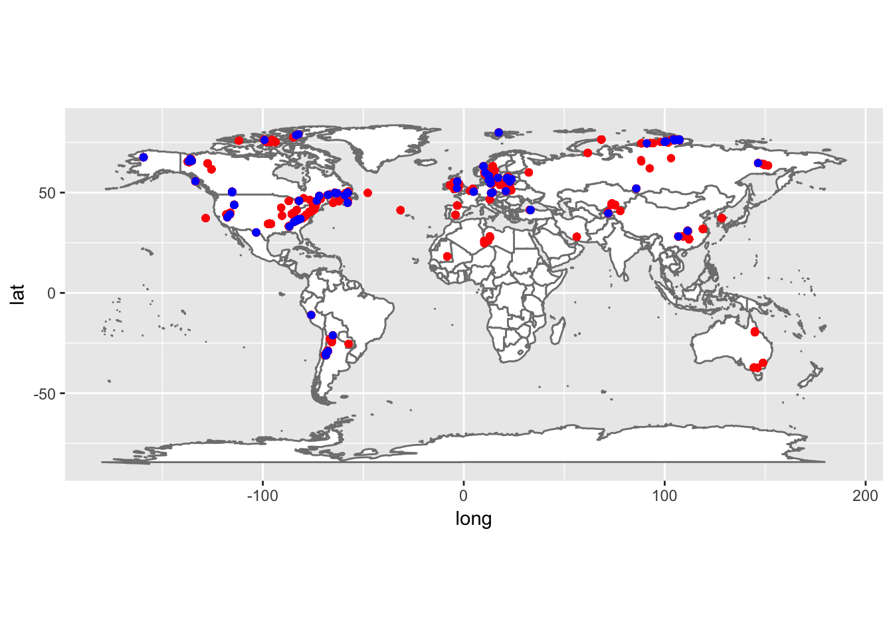
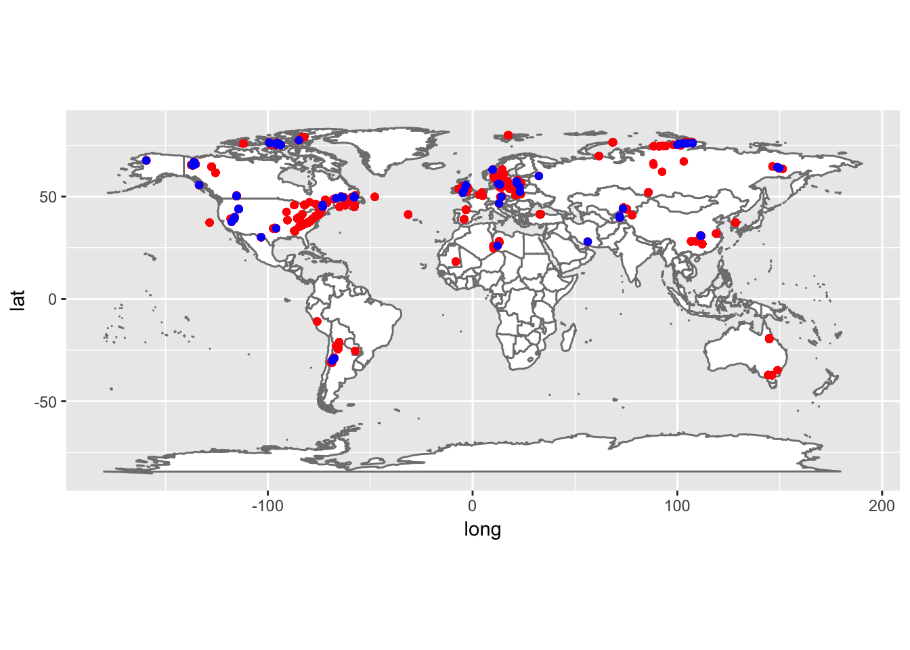

Graptolite Synonymies
Correlation to temporal, geographic, or authorial factors?
Erin Schuster
Introduction
Taxonomy is the method by which organisms are assigned to a genus and species group. It is a science that is constantly evolving due to our growing knowledge of a group of organisms. This is especially true of graptolite taxonomy. Early work with graptolites focused solely on naming graptolites for use in biostratigraphy, meaning that graptolites were loosely grouped based on their general appearance instead of evolutionary or trait based backing. As studies into the evolution in graptolite morphology, or genetics based traits increased, there was an increasing realization that synonymies, or the same type of organism with different taxonomic names, existed. Through carefully examination of graptolite literature these synonyms are slowly being identified (Mitchell et. al, unpublished data). However, the presence of synonyms may not only be due to changes in graptolite research through time. These synonyms may be geographically located either due to a cultural preference for generating new species or a tectonically strained region where morphology is more difficult to constrain. It may also be that particular authors were more likely to generate new species names due to a variety of factors.
This research will attempt to examine any correlation by first mapping the presence of graptolites that both with and without synonyms on a world map to visually determine locations with more synonymies. This map will then be animated such that the graptolite locations will plot based upon the year that they were named. If there is a temporal correlation to synonymies, more synonyms should plot within a given time frame than others. Finally, the graptolites with synonyms will be grouped by the original naming author with the number of individual species summed per author to determine if there is an author based correlation.
Materials and methods
The presence of graptolite synonymies may be correlated to a number of factors including time, cultural or tectonic location, and author. The project will combine data on synonymies, contained within the Taxonomic Dictionary (Mitchell et. al., unpublished data), with graptolite locatlity information, complied as section data (Mitchell et. al., unpublished data). This will be used to:
- Examine geographic distribution of graptolites with synonymies compared to graptolites without synonymies
- Examine temporal distribution of both groupings of graptolites
- Determine relationship of number of synonymies related to naming author.
Intially, the required packages will need to be loaded (you may need to install some packages):
library(dplyr)
library(tidyr)
library(sp)
library(rgeos)
library(maptools)
library(ggplot2)The data is contained in two comma separated files (CSV) that will need to be loaded into Rstudio from the working directory. As such, it is important to make sure that the working directory contains both the Taxonomic Dictionary and the section data.
#Load Taxonomic Dictionary
myDict=read.csv("data/Taxonomic dictionary Oct3'17_mod.csv",header=T,sep=",")
#Load section data
mySect=read.csv("data/sections_table format.csv", header=T, sep =",")(There seems to be an error in loading the CSV files. It works fine from a script in Rstudio but will not work from the RMD file even if the working directory is properly set. Unsure how to rectify this problem.)
After loading both CSV files, the section data and the Taxonomic Dictionary must be joined so that all the geographic locations are paired with the correct taxonomic information including the presence of senior synonyms. This data is then filtered by the senior synonym column in order to generate a list that contains only graptolite locations with named senior synonyms.
#Join the sections data and the graptolite dictionary
Grap_locate=full_join(mySect,myDict,by="GRCode")## Warning: Column `GRCode` joining factors with different levels, coercing to
## character vector#Generate synonoym list
synGrap_locate=filter(Grap_locate, senior.synonym!="*" & senior.synonym!=99999)These two data sets are then visually compared by overlapping the synonyms list over all of the graptolite locations on a world map.
#Load a world map
library(ggmap)
library(maptools)
library(maps)
worldmap=borders("world",colour="gray50",fill="white")
#plot points on world map
mapWorld=ggplot()+worldmap
mapWorld+
geom_point(data=Grap_locate,aes(x=Longitude,y=Latitude),col="red",show.legend=NA)+
geom_point(data=synGrap_locate,aes(x=Longitude,y=Latitude),col="blue",show.legend=NA)+
coord_equal()## Warning: Removed 2946 rows containing missing values (geom_point).## Warning: Removed 1104 rows containing missing values (geom_point).
Map illustrating graptolite locations
Areas that contain only red points indicate locations were there are no graptolite synonymies.
The synonymies were then filtered by the decade in which they were named, beginning in 1828 with the first named species.
#plot by "decade"
synGrap_year=filter(synGrap_locate, date!="*" & date!="Chen et al 2011" & date!="1997a")
synGrap_18_2837=filter(synGrap_year, date==1828 | date==1829 | date==1830 | date==1831 | date==1832 | date==1833 | date==1834 | date==1835 | date==1836 | date==1837)
synGrap_18_3847=filter(synGrap_year, date==1838 | date==1839 | date==1840 | date==1841 | date==1842 | date==1843 | date==1844 | date==1845 | date==1846 | date==1847)
synGrap_18_4857=filter(synGrap_year, date==1848 | date==1849 | date==1850 | date==1851 | date==1852 | date==1853 | date==1854 | date==1855 | date==1856 | date==1857)
synGrap_18_5867=filter(synGrap_year, date==1858 | date==1859 | date==1860 | date==1861 | date==1862 | date==1863 | date==1864 | date==1865 | date==1866 | date==1867)
synGrap_18_6877=filter(synGrap_year, date==1868 | date==1869 | date==1870 | date==1871 | date==1872 | date==1873 | date==1874 | date==1875 | date==1876 | date==1877)
synGrap_18_7887=filter(synGrap_year, date==1878 | date==1879 | date==1880 | date==1881 | date==1882 | date==1883 | date==1884 | date==1885 | date==1886 | date==1887)
synGrap_18_8897=filter(synGrap_year, date==1888 | date==1889 | date==1890 | date==1891 | date==1892 | date==1893 | date==1894 | date==1895 | date==1896 | date==1897)
synGrap_1819_9807=filter(synGrap_year, date==1898 | date==1899 | date==1900 | date==1901 | date==1902 | date==1903 | date==1904 | date==1905 | date==1906 | date==1907)
synGrap_19_0817=filter(synGrap_year, date==1908 | date==1909 | date==1910 | date==1911 | date==1912 | date==1913 | date==1914 | date==1915 | date==1916 | date==1917)
synGrap_19_1827=filter(synGrap_year, date==1918 | date==1919 | date==1920 | date==1921 | date==1922 | date==1923 | date==1924 | date==1925 | date==1926 | date==1927)
synGrap_19_2837=filter(synGrap_year, date==1928 | date==1929 | date==1930 | date==1931 | date==1932 | date==1933 | date==1934 | date==1935 | date==1936 | date==1937)
synGrap_19_3847=filter(synGrap_year, date==1938 | date==1939 | date==1940 | date==1941 | date==1942 | date==1943 | date==1944 | date==1945 | date==1946 | date==1947)
synGrap_19_4857=filter(synGrap_year, date==1948 | date==1949 | date==1950 | date==1951 | date==1952 | date==1953 | date==1954 | date==1955 | date==1956 | date==1957)
synGrap_19_5867=filter(synGrap_year, date==1958 | date==1959 | date==1960 | date==1961 | date==1962 | date==1963 | date==1964 | date==1965 | date==1966 | date==1967)
synGrap_19_6877=filter(synGrap_year, date==1968 | date==1969 | date==1970 | date==1971 | date==1972 | date==1973 | date==1974 | date==1975 | date==1976 | date==1977)
synGrap_19_7887=filter(synGrap_year, date==1978 | date==1979 | date==1980 | date==1981 | date==1982 | date==1983 | date==1984 | date==1985 | date==1986 | date==1987)
synGrap_19_8897=filter(synGrap_year, date==1988 | date==1989 | date==1990 | date==1991 | date==1992 | date==1993 | date==1994 | date==1995 | date==1996 | date==1997)
synGrap_1920_9807=filter(synGrap_year, date==1998 | date==1999 | date==2000 | date==2001 | date==2002 | date==2003 | date==2004 | date==2005 | date==2006 | date==2007)
synGrap_20_0817=filter(synGrap_year, date==2008 | date==2009 | date==2010 | date==2011 | date==2012 | date==2013 | date==2014 | date==2015 | date==2016 | date==2017)These subdivisions are then mapped on a world map to indicate if there is a geographic relation with the above decadal time breaks.
#1828-1837
mapWorld+
geom_point(data=Grap_locate,aes(x=Longitude,y=Latitude),col="red",show.legend=NA)+
geom_point(data=synGrap_18_2837,aes(x=Longitude,y=Latitude),col="blue",show.legend=NA)+
coord_equal()## Warning: Removed 2946 rows containing missing values (geom_point).## Warning: Removed 5 rows containing missing values (geom_point).#1838-1847
mapWorld+
geom_point(data=Grap_locate,aes(x=Longitude,y=Latitude),col="red",show.legend=NA)+
geom_point(data=synGrap_18_3847,aes(x=Longitude,y=Latitude),col="blue",show.legend=NA)+
coord_equal()## Warning: Removed 2946 rows containing missing values (geom_point).## Warning: Removed 6 rows containing missing values (geom_point).#1848-1857
mapWorld+
geom_point(data=Grap_locate,aes(x=Longitude,y=Latitude),col="red",show.legend=NA)+
geom_point(data=synGrap_18_4857,aes(x=Longitude,y=Latitude),col="blue",show.legend=NA)+
coord_equal()## Warning: Removed 2946 rows containing missing values (geom_point).## Warning: Removed 16 rows containing missing values (geom_point).#1858-1867
mapWorld+
geom_point(data=Grap_locate,aes(x=Longitude,y=Latitude),col="red",show.legend=NA)+
geom_point(data=synGrap_18_5867,aes(x=Longitude,y=Latitude),col="blue",show.legend=NA)+
coord_equal()## Warning: Removed 2946 rows containing missing values (geom_point).## Warning: Removed 32 rows containing missing values (geom_point).#1868-1877
mapWorld+
geom_point(data=Grap_locate,aes(x=Longitude,y=Latitude),col="red",show.legend=NA)+
geom_point(data=synGrap_18_6877,aes(x=Longitude,y=Latitude),col="blue",show.legend=NA)+
coord_equal()## Warning: Removed 2946 rows containing missing values (geom_point).## Warning: Removed 66 rows containing missing values (geom_point).#1878-1887
mapWorld+
geom_point(data=Grap_locate,aes(x=Longitude,y=Latitude),col="red",show.legend=NA)+
geom_point(data=synGrap_18_7887,aes(x=Longitude,y=Latitude),col="blue",show.legend=NA)+
coord_equal()## Warning: Removed 2946 rows containing missing values (geom_point).## Warning: Removed 29 rows containing missing values (geom_point).#1888-1897
mapWorld+
geom_point(data=Grap_locate,aes(x=Longitude,y=Latitude),col="red",show.legend=NA)+
geom_point(data=synGrap_18_8897,aes(x=Longitude,y=Latitude),col="blue",show.legend=NA)+
coord_equal()## Warning: Removed 2946 rows containing missing values (geom_point).## Warning: Removed 31 rows containing missing values (geom_point).#1898-1907
mapWorld+
geom_point(data=Grap_locate,aes(x=Longitude,y=Latitude),col="red",show.legend=NA)+
geom_point(data=synGrap_1819_9807,aes(x=Longitude,y=Latitude),col="blue",show.legend=NA)+
coord_equal()## Warning: Removed 2946 rows containing missing values (geom_point).## Warning: Removed 86 rows containing missing values (geom_point).#1908-1917
mapWorld+
geom_point(data=Grap_locate,aes(x=Longitude,y=Latitude),col="red",show.legend=NA)+
geom_point(data=synGrap_19_0817,aes(x=Longitude,y=Latitude),col="blue",show.legend=NA)+
coord_equal()## Warning: Removed 2946 rows containing missing values (geom_point).## Warning: Removed 34 rows containing missing values (geom_point).
#1918-1927
mapWorld+
geom_point(data=Grap_locate,aes(x=Longitude,y=Latitude),col="red",show.legend=NA)+
geom_point(data=synGrap_19_1827,aes(x=Longitude,y=Latitude),col="blue",show.legend=NA)+
coord_equal()## Warning: Removed 2946 rows containing missing values (geom_point).## Warning: Removed 12 rows containing missing values (geom_point).#1928-1937
mapWorld+
geom_point(data=Grap_locate,aes(x=Longitude,y=Latitude),col="red",show.legend=NA)+
geom_point(data=synGrap_19_2837,aes(x=Longitude,y=Latitude),col="blue",show.legend=NA)+
coord_equal()## Warning: Removed 2946 rows containing missing values (geom_point).## Warning: Removed 94 rows containing missing values (geom_point).
#1938-1947
mapWorld+
geom_point(data=Grap_locate,aes(x=Longitude,y=Latitude),col="red",show.legend=NA)+
geom_point(data=synGrap_19_3847,aes(x=Longitude,y=Latitude),col="blue",show.legend=NA)+
coord_equal()## Warning: Removed 2946 rows containing missing values (geom_point).## Warning: Removed 37 rows containing missing values (geom_point).#1948-1957
mapWorld+
geom_point(data=Grap_locate,aes(x=Longitude,y=Latitude),col="red",show.legend=NA)+
geom_point(data=synGrap_19_4857,aes(x=Longitude,y=Latitude),col="blue",show.legend=NA)+
coord_equal()## Warning: Removed 2946 rows containing missing values (geom_point).## Warning: Removed 27 rows containing missing values (geom_point).#1958-1967
mapWorld+
geom_point(data=Grap_locate,aes(x=Longitude,y=Latitude),col="red",show.legend=NA)+
geom_point(data=synGrap_19_5867,aes(x=Longitude,y=Latitude),col="blue",show.legend=NA)+
coord_equal()## Warning: Removed 2946 rows containing missing values (geom_point).## Warning: Removed 67 rows containing missing values (geom_point).#1968-1977
mapWorld+
geom_point(data=Grap_locate,aes(x=Longitude,y=Latitude),col="red",show.legend=NA)+
geom_point(data=synGrap_19_6877,aes(x=Longitude,y=Latitude),col="blue",show.legend=NA)+
coord_equal()## Warning: Removed 2946 rows containing missing values (geom_point).## Warning: Removed 81 rows containing missing values (geom_point).
#1978-1987
mapWorld+
geom_point(data=Grap_locate,aes(x=Longitude,y=Latitude),col="red",show.legend=NA)+
geom_point(data=synGrap_19_7887,aes(x=Longitude,y=Latitude),col="blue",show.legend=NA)+
coord_equal()## Warning: Removed 2946 rows containing missing values (geom_point).## Warning: Removed 118 rows containing missing values (geom_point).#1988-1997
mapWorld+
geom_point(data=Grap_locate,aes(x=Longitude,y=Latitude),col="red",show.legend=NA)+
geom_point(data=synGrap_19_8897,aes(x=Longitude,y=Latitude),col="blue",show.legend=NA)+
coord_equal()## Warning: Removed 2946 rows containing missing values (geom_point).## Warning: Removed 63 rows containing missing values (geom_point).#1998-2007
mapWorld+
geom_point(data=Grap_locate,aes(x=Longitude,y=Latitude),col="red",show.legend=NA)+
geom_point(data=synGrap_1920_9807,aes(x=Longitude,y=Latitude),col="blue",show.legend=NA)+
coord_equal()## Warning: Removed 2946 rows containing missing values (geom_point).## Warning: Removed 25 rows containing missing values (geom_point).#2008-2017 (2011)
mapWorld+
geom_point(data=Grap_locate,aes(x=Longitude,y=Latitude),col="red",show.legend=NA)+
geom_point(data=synGrap_20_0817,aes(x=Longitude,y=Latitude),col="blue",show.legend=NA)+
coord_equal()## Warning: Removed 2946 rows containing missing values (geom_point).## Warning: Removed 1 rows containing missing values (geom_point).Results
Map illustrating locations of graptolites and graptolite synonymies
Maps illustrating locations of graptolites and graptolite synonymies grouped by the decade the synonym was named
Maps illustrating locations of graptolites and graptolite synonymies grouped by the decade the synonym was named
Maps illustrating locations of graptolites and graptolite synonymies grouped by the decade the synonym was named
Maps illustrating locations of graptolites and graptolite synonymies grouped by the decade the synonym was named
Maps illustrating locations of graptolites and graptolite synonymies grouped by the decade the synonym was named
Maps illustrating locations of graptolites and graptolite synonymies grouped by the decade the synonym was named
Maps illustrating locations of graptolites and graptolite synonymies grouped by the decade the synonym was named
Maps illustrating locations of graptolites and graptolite synonymies grouped by the decade the synonym was named
Maps illustrating locations of graptolites and graptolite synonymies grouped by the decade the synonym was named
Maps illustrating locations of graptolites and graptolite synonymies grouped by the decade the synonym was named
Maps illustrating locations of graptolites and graptolite synonymies grouped by the decade the synonym was named

Maps illustrating locations of graptolites and graptolite synonymies grouped by the decade the synonym was named

Maps illustrating locations of graptolites and graptolite synonymies grouped by the decade the synonym was named
Maps illustrating locations of graptolites and graptolite synonymies grouped by the decade the synonym was named
Maps illustrating locations of graptolites and graptolite synonymies grouped by the decade the synonym was named
Maps illustrating locations of graptolites and graptolite synonymies grouped by the decade the synonym was named
Maps illustrating locations of graptolites and graptolite synonymies grouped by the decade the synonym was named
Maps illustrating locations of graptolites and graptolite synonymies grouped by the decade the synonym was named
Maps illustrating locations of graptolites and graptolite synonymies grouped by the decade the synonym was named
Conclusions
What have you learned? Are there any broader implications?
References
Mitchell, Charles et. al., Graptolite Sections Data, unpublished data.
Mitchell, Charles et. al. Graptolite Taxonomic Dictionary, unpublished data.